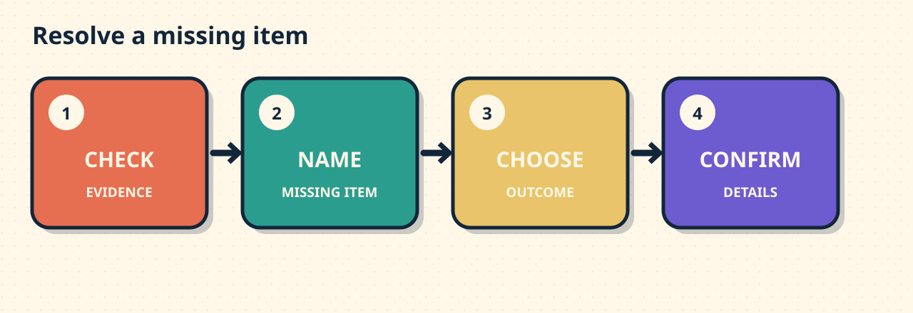

The Garlic Bread Is Missing
Goal: Report one missing order item, name it exactly, request replacement or refund, and confirm the chosen outcome.
Meet the situation
Your receipt lists soup, garlic bread, and apple juice. The bag contains soup and juice.

Compare the evidence. Then name the exact missing item.
The model
Report: “My order is missing the garlic bread.”
Choose: “Could you send a replacement, please?”
Confirm: “Could you confirm when it will arrive?”
Meaning, grammar, tone
Meaning: A replacement sends the item. A refund returns its cost.
Grammar: My order is missing + item. Could you + action?
Tone: Name the item. Choose one outcome. Confirm its details.
Decision one
Which message matches the receipt and bag?
Decision two
Support says: “We can send the garlic bread or refund that item. Which would you prefer?”
Support offers replacement or refund. Which reply chooses one outcome?
Your turn
Your takeaway receipt lists curry and rice. Only the curry arrived. You finished eating, so you want the rice refunded.
Write two sentences. Name the missing item. Request the refund. Add one confirmation question.
Review later
Tomorrow, ask: Which four details make a missing-item report useful?
No account. No tracking. No saved progress.